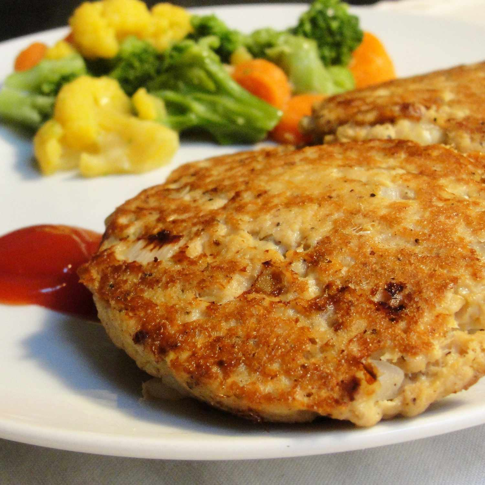

Grandma's Famous Salmon Cakes

Wondering how to make salmon cakes? This is a recipe for my grandmother's famous salmon cakes.
It's a family recipe that has been passed down through generations.
Serve them with macaroni and cheese or any other type of side dish.
Ingrediens
- 1 (14.75 ounce) can salmon, drained and flaked
- 2 large eggs, beaten
- 1 small onion, diced
- 1 teaspoon ground black pepper
- 3 tablespoons vegetable oil
Steps
- Pick through salmon to remove any bones or large pieces of skin
- Beat eggs in a mixing bowl. Stir in salmon, onion, and black pepper. Mix thoroughly
- Shape salmon mixture into eight 2-ounce patties
- eat oil in a large skillet over medium heat. Fry patties until crispy and golden brown on the outsides,
about 5 minutes per side; work in batches if necessary to avoid crowding the pan
Home